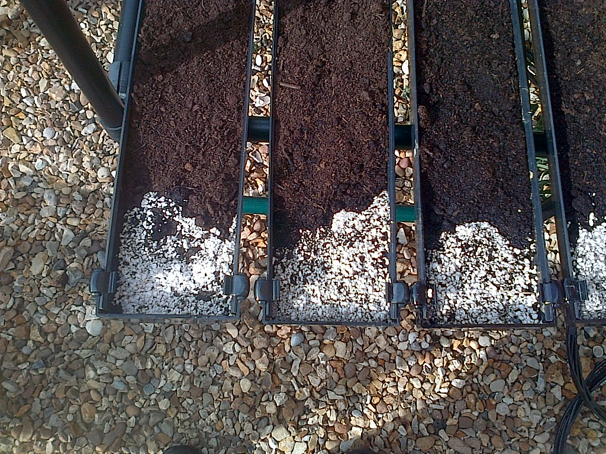
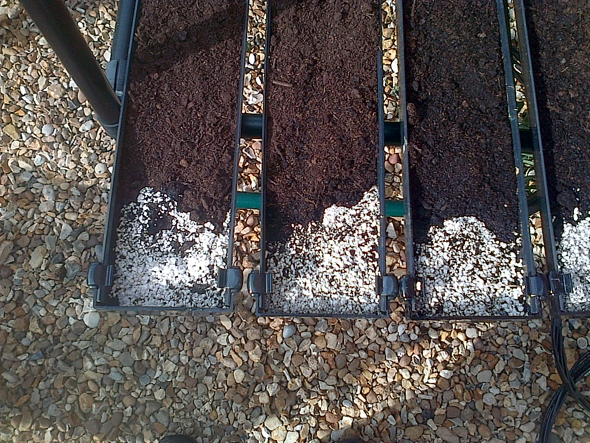
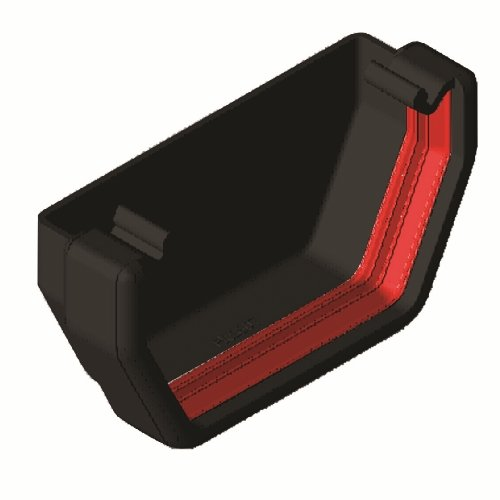
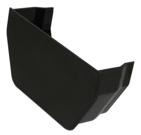

Greening Urban Environments
GutterGrowing - updated - software source available!
Our Fun Evironmental Project
Basic Guide to GutterGrowing for Beginners
A vertical growing system for £25 or less
Perhaps it’s best to begin this guide by saying that GutterGrowing is not new or unusual. Many types of fruit and veg are grown in large automated commercial vertical growing systems using big metal industrial size gutters.
The GutterGrow project (kindly funded by EEDA and the RSA) was an R&D project looking at taking the ideas from the commercial growers and then scaling them down to make smaller low cost GutterGrowing systems that anyone could construct and use. In particular it was important that the systems could be used in urban areas where many people do not have access to gardens or allotments.
The critical factors behind the adopted design are:
1. System had to be made of low cost readily available materials (£25 or less)
2. Unit should be of a shape and size to enable protection from birds, pests and other undesirables
3. System should facilitate automated irrigation, plant nutrition and plant care (if required)
4. System should be of a size and scale capable of indoor and outdoor operation
5. KISS - Where ever possible - Keep it Super Simple - Keep it Small but Scaleable
In order to make the project as useful as possible it was decided to follow the ‘open source’ route and so all the ideas and information (excluding software) presented in this guide are free to use and develop. In return we would be grateful for any new and interesting material readers would like to add to this guide and which can be made available for the benefit and use of everyone. (please send comments and contributions to guide@sustainable-opportunities.com). All contributions will be acknowledged.
.
A Few Basic Questions
Why (vertical growing) GutterGrowing ?
So why should you look at GutterGrowing ?
This is really LW’s environmental love/fun project but we will do our best to cover the key points for you.
1. Good for the environment – plants improve our environment – flowers brighten our lives – fresh locally grown produce is delicious encouraging healthy eating. Sterile urban areas benefit from plants and flowers growing everywhere to brighten and clean the urban environment. Plants help to reduce CO2 build-up (reduced travel miles, plant absorption ). Just think what millions of small growing systems in urban areas could do for the environment and CO2 reduction !!
2. Good for people – GutterGrowing (verical growing)is easy to do, low cost and can be done anywhere - no need for a garden or an allotment. It provides participants with a long term interest and activity keeping minds and bodies stimulated and healthy. Growing edible produce can be an active happy healthy and rewarding experience for everyone. GutterGrow systems can be small and compact or large and adventurous and can be constructed to be any shape size of height to suit old and young - marvelous stuff !!!!
3. Good for society –Lots of investigation ongoing here but there are indications of environmental benefits (as above) economic benefits (reduced health and care costs) and social benefits (providing an easily accessible activity with an unusual area of common ground for young and old to interact). Builds on the ‘Grow Your Own’ movement.
4. Good for education – the importance of food production and feeding a growing population is a central educational issue. GutterGrowing can provide an affordable, accessible and easy to use educational tool demonstrating important aspects of food production. GutterGrowing systems can be adapted for all types of school environment (inside or out – no land allocation required) and new growing technologies easily incorporated for demonstration.
Why Gutters ?
Plastic guttering (the type you use around the house) is relatively low cost and if you stick a few lengths onto some bricks or a frame and fill the gutters with compost you have your first basic GutterGrowing system.
 

It’s really low cost (just a few pounds), easy to construct, and you can put it up anywhere. You don’t need an allotment or garden. It can go in the back yard or even your bedroom if you feel so inclined. It’s also easy to take down, reconfigure, or move to another site (to follow the sun !). You can start small and then easily extend or expand your growing system.
Other goodies include being able to build systems to particular heights or shapes if you have back or mobility problems – and you can also construct systems into a regular block shape where it’s easy to fit netting if you need to keep pesky insects or birds off your plants.
How much will it cost ?
If you have some old gutters - nothing - or to buy around £10 for 3 mtrs - end fittings £5 - old shelving £5 - compost £5
What an incredible bargain - your own starter growing system for £25 or less - build one for a friend/ your dad/ your mum/ aunt Bessie
What about food and water for the plants ?
One of the useful things about household guttering is that it comes with two types of end fittings. One is a sealed end fitting which we can use to introduce liquid into the gutter and the other is a push fit fitting which allows liquid to escape – this is just what we need !!
Black Sealed End Fitting and Push Fit End Fitting

We can use these fittings to allow us to put irrigation in at a sealed end of a gutter. All we then need to do is to adjust the angle of the gutter to allow irrigation liquid to enter at the sealed end and then run the length of the gutter to the push fit end where any excess escapes.
HINT - If we put plant food in at the top it can then be carried by the irrigation liquid down the gutter with any excess escaping into a drainage tray ready for recycling !
HINT - Adjustment of the angle of the gutters provides control over the rate of drainage from your GutterGrow, and if your GutterGrow is outside it ensures that it drains and doesn’t flood if there is a sudden bout of wet weather.
Do I need drainage holes down the length of the gutters ?
HINT - It is best not to drill drainage holes down the length of the gutters. If you do the roots of the plants will go through the holes and you will have problems clearing or cleaning your GutterGrow system. If you don’t drill holes you can also slide a whole row of plants out of a gutter. Some keen gardeners have been using GutterGrow systems to plant out their seeds (keeping them away from pests) and then once the seedlings are established sliding them out in a beautiful straight line into a garden or allotment trench.
Is it easy to make an automatic GutterGrowing system ?

A basic low cost GutterGrowing system is simple to set up and will provide a wonderfully interesting growing/gardening experience provided you look after the plants as they grow. They will require regular checks, watering and feeding in the same way as house plants (see important note below). If you yearn for a simpler life we will explain in later parts of this guide how you can automate stages of the GutterGrowing process and show you how to construct a fully automatic GutterGrowing system. You can even get your plants to send you a text message to your phone if they are in distress!
What can I Grow ?
It is possible to grow many varieties of plants. Most flowers and vegetables can be grown but tall varieties and plants requiring depth of soil are more problematical. With a bit of experimentation you will find the varieties that suit you best and even some where you can become self-sufficient over a growing season. Examples and pictures of some of the varieties we have grown are included at the end in an appendix. Please also see important note below about growing some types of plant !!!!!!
Important Note/Warnings from recent projects
A note of caution about the use of black guttering - it can get quite warm in bright midday sunshine ! An advantage is that this encourages germination but a later stage disadvantage is that maintainance of irrigation is crucial to prevent plants drying out or overheating in systems continually exposed to full sunlight.
Finally you need to be aware that it is illegal to grow some types of plant in these growing systems, in some countries. You have been warned - check before growing !!!
Build a simple, easy to construct, low cost, automatic GutterGrow (Projects One and Two)
Go to Project One - Build a Basic GutterGrow system - CLICK HERE
Go to Project Two - Automate your irrigation with a timer - CLICK HERE
Go to Project Three - Add on a small portable solar power system - CLICK HERE
Go to Project Four - Example Control Hardware - CLICK HERE
Go to Project Five - Source for Software (tutorials, code and support - CLICK HERE
Appendix - See what you can grow CLICK HERE